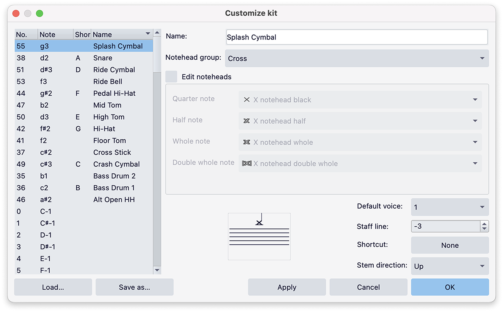
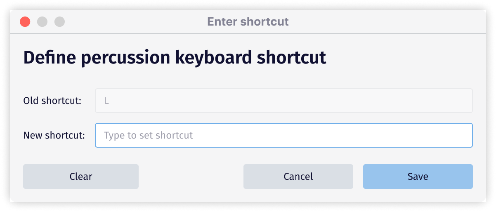

Percussion kit customisation
Overview
You can customize the name, notehead style, stave position, stem direction, keyboard shortcut, and default voice assignment for each sub-instrument and variant in an unpitched percussion instrument.
To access these options, click Customise kit from the percussion panel header.
Customising percussion notation
Using the options in the Customise kit dialog, you can:
- Rename sub-instruments and variants
- Customise noteheads
- Assign a default voice
- Change stave positions
- Assign a keyboard shortcut
- Choose the default stem direction

The Customize Kit dialog allows you to edit the appearance of all sub-instruments and variants in your kit.
In the panel on the left, you can sort the list of sub-instruments and variants in the following ways:
- Click the No. column header to sort by MIDI number
- Click the Note column header to sort by pitch
- Click the Shortcut column header to sort by keyboard shortcut
- Click the Name column header to sort by name
Sorting by **MIDI number** allows you to see the names of sub-instruments and variants in same order as they appear in the percussion panel as drum pads.
Any customisations made in this dialog will be immediately shown in the preview panel. Changes will also be automatically shown in the score, however these will only be committed when you click **OK**. These changes are undoable.
Rename sub-instruments and variants
To rename a sub-instrument or variant:
- Select an instrument from the panel on the left
- Type your desired label in the field next to Name.
The corresponding drum pad label in the percussion panel will be updated when you click either Apply or OK.
Customise noteheads
To customise the noteheads assigned to a sub-instrument or variant:
- Select an instrument from the panel on the left
- Click the dropdown next to Notehead group
- Choose from the large range of noteheads in the dropdown menu
Each notehead group comes with up to four possible style variants for different durations (quarter note, half note, whole note, double whole note). These come pre-defined, but can be edited if you have specific requirements.
To edit noteheads for individual durations within a notehead group:
- Click the Edit noteheads checkbox
- Choose your required notehead for each duration in the corresponding dropdown menus
Assign a default voice
To change the default voice to which a sub-instrument or variant is assigned:
- Select an instrument from the panel on the left
- Choose from either voice 1, 2, 3, or 4 in the dropdown next to Default voice
Changing a voice assignment affects all future notation for the selected sub-instrument or variant but does not alter existing notation.
Change stave positions
To change the stave line or space at which a sub-instrument or variant is positioned:
- Select an instrument from the panel on the left
- Move its notehead up or down by clicking the arrows in the spin box next to Stave line
Assign a keyboard shortcut
To assign a keyboard shortcut for a sub-instrument or variant:
- Select an instrument from the panel on the left
- Click the button next to Shortcut
- Type a key to set a shortcut
- Click Save to confirm your selection
A message will appear if your chosen shortcut conflicts with another assignment. Clicking Save at this point will trigger a prompt asking you to confirm your choice.
In some cases, it may be okay to assign a shortcut already in use. MuseScore Studio can recognize when a shortcut is being used for percussion notation input and when it applies to something else outside the percussion system.
Should a change in shortcut render an existing function no longer possible, either choose a different shortcut, or remove the shortcut by clicking Clear in the Define percussion keyboard shortcut dialog.

This dialog allows you to define or clear a shortcut assignment for each percussion sub-instrument or variant.
Choose the default stem direction
To change the default stem direction for a sub-instrument or variant:
- Select an instrument from the panel on the left
- Choose from either Up, Down, or Auto in the dropdown next to Stem direction
Changing the stem direction affects all future notation for the selected sub-instrument or variant but does not alter existing notation.
Saving changes and using them in other scores
When you've finished making customizations, press OK to commit your changes. These are saved to your score file.
It's also possible to save all your customisations, as well as the drum pad layout in the percussion panel, for use in other scores.
To save your percussion kit for use in other scores:
- Save your setup as a drumset file (.drm) by clicking Save as... in the bottom left corner of the dialog
- Choose a file location on your computer. By default, the file will be saved in MuseScore Studio's Styles folder
- Click Save
When loading your drumset file into another score, bear in mind that, while a drumset file can technically be loaded onto any unpitched percussion instrument, playback will only work correctly if the right sound library is chosen in the mixer.
When setting up your score, it's safest to add an instrument that matches the one you've previously customised.
To load your percussion kit in another score
- Create or open another score containing an unpitched percussion instrument
- Select the instrument's stave
- Click Edit kit in the percussion panel header
- In the Customise kit dialog that appears, click the Load... button in the bottom left corner
- Locate your saved drumset (.drm) file
- Click Open
Your customizations, including any changes made to the layout of the percussion panel, will now be ready to use in your new score.